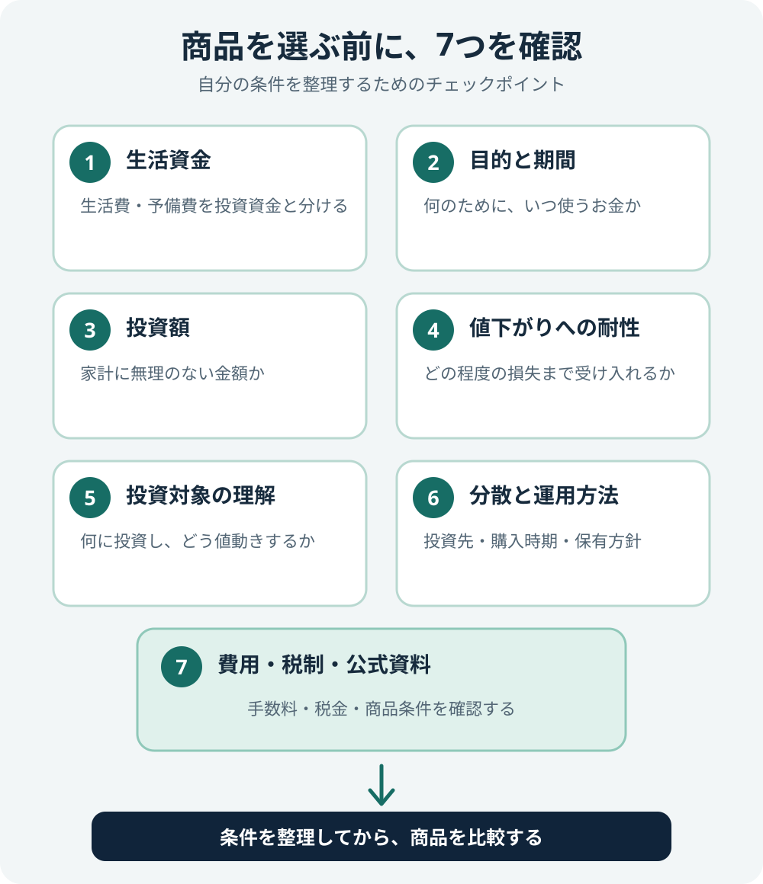

カテゴリツリーを開く
カテゴリツリーを開く
カテゴリツリーを開く
投資を始める前に確認したい7つのこと
投資を始めるとき、最初に決めるのは商品や銘柄ではありません。生活に必要なお金を確保し、何のために・いつ使うお金を・どの程度の値動きまで受け入れて運用するのかを整理することが先です。7つの問いに沿って、自分の準備を確認してみましょう。

1. 生活に必要なお金を確保しているか
日々の生活費、急な病気・失業・修理などに備えるお金、近い将来に使う予定のある資金は、値下がりする可能性のある投資資金と分けておきましょう。投資商品は、必要なタイミングで価格が下がっていることがあります。
生活防衛資金として必要な金額に一律の正解はありません。毎月の支出、収入の安定性、家族構成、雇用形態、利用できる保障などによって変わります。まずは自分の家計で、すぐに使える預貯金をどの程度残す必要があるか考えます。最低生活費の計算や、3・6・12か月分の試算方法は、「生活防衛資金とは？必要額の計算と備え方」で具体的に確認できます。
自分の生活費がまだ分からない場合、総務省統計局の2025年家計調査では、1か月の平均消費支出は単身世帯で約17.3万円、二人以上の世帯で約31.4万円です。ただし、これは最低限必要な生活費でも、生活防衛資金の推奨額でもありません。世帯人数や住居費、生活スタイルで大きく変わるため、まず家計の実際の支出を確認するための参考値として使いましょう。平均額の内訳と注意点、6か月分に換算した金額は、「生活防衛資金とは？」の家計調査の平均額で確認できます。
2. 何のために、いつ使うお金なのか決まっているか
老後資金、教育費、住宅購入、将来の選択肢を広げるための資金など、目的によって必要な時期や金額は異なります。目的が違えば、預貯金で準備する部分と投資を検討する部分の分け方も変わります。
特に大切なのは、投資したお金を使う時期です。数年以内に使う予定がある資金は、運用中に値下がりすると回復を待てない可能性があります。一方、長期間使う予定のない資金でも、長く投資すれば必ず利益が出るわけではありません。使う時期から逆算して、価格変動をどこまで受け入れられるかを考えます。
3. 毎月・最初に投資する金額は無理のない範囲か
投資額は、期待する利益から逆算するのではなく、生活費・備え・近い将来の支出を差し引いた家計の余裕から考えます。毎月の収支を確認し、収入が減った月や臨時支出がある月でも続けられる金額かを確かめましょう。
積立投資なら、最初から大きな金額を設定する必要はありません。少額から始め、家計や生活の変化に応じて積立額を調整する方法もあります。ボーナスや臨時収入をあてにした計画、借入金を使った投資、生活費を削りすぎる投資は慎重に考える必要があります。
4. どの程度の値下がりなら受け入れられるか
投資信託や株式などの価格は上下し、投資元本を下回ることがあります。値下がりへの耐性は、気持ちの面だけでなく、収入・資産・負債・投資期間・資金を使う時期にも左右されます。
たとえば、評価額が一時的に20%下がったとき、金額にするとどれくらいの損失になるかを考えてみましょう。100万円なら20万円、500万円なら100万円です。その状況でも生活に支障がなく、慌てて売却せずにいられるかを具体的に想像します。20%は説明用の仮定であり、実際の下落幅を予測するものではありません。
リスクは単に「危険度」ではなく、リターンの振れ幅を指す場合があります。値動きが大きい商品ほど高い利益が得られると決まっているわけではなく、大きな損失につながる可能性もあります。
5. 投資対象と商品の仕組みを理解しているか
商品名やランキングだけで決めず、何に投資し、どのような要因で価格が動くのかを確認しましょう。株式・債券・不動産投資信託（REIT）では、値動きに影響する要因が異なります。同じ株式型でも、投資する国・地域、業種、銘柄数、指数や運用方針によって中身は変わります。
投資信託を選ぶ場合は、目論見書などで投資対象、ベンチマーク、為替ヘッジの有無、分配方針、換金条件を確認します。仕組みやリスクを自分で説明できない商品は、理解できるまで購入を急がないことが大切です。
6. 分散の考え方と、自分に合う運用方法を考えているか
投資先を一つに集中させると、その投資先固有の問題が資産全体に大きく影響します。資産・地域・業種・銘柄などを分ける分散投資は、特定の対象に集中するリスクを抑える考え方です。ただし、市場全体の下落などによる損失まで防げるわけではありません。
また、分散投資と積立投資は別の考え方です。分散は「何に投資するかを分けること」、積立は「購入する時期を分けること」です。長期保有も、短期の値動きだけで売買を繰り返さず、目的に沿って運用を続けるための考え方ですが、保有期間を長くすれば損失が必ずなくなるわけではありません。
一括投資と積立投資のどちらが適しているかも、資金を用意できる時期、価格変動への心理的な負担、投資期間などによって異なります。どの方法にもメリットと注意点があり、積立なら必ず有利になるわけではありません。
7. 費用・税制・公式資料を確認したか
投資では、購入時・保有中・売却時に費用がかかる場合があります。投資信託なら信託報酬だけでなく、その他費用や実質コストも確認します。費用は長期保有するほど運用成果に影響するため、商品ごとの条件を同じ基準で比較しましょう。
NISAは、一定の投資から得られる利益が非課税になる制度です。ただし、元本保証や損失補填の制度ではありません。対象商品、投資枠、口座の扱いなどは、利用前に最新の公式情報で確認してください。制度の対象であることだけで、商品が自分に合うとは限りません。
広告・SNS・口コミは情報収集のきっかけにはなりますが、購入判断はそれだけに頼らないようにしましょう。金融庁などの公的機関、運用会社の目論見書・運用報告書、取引所や金融機関の公式資料で、メリットだけでなくリスク・費用・換金条件も確認します。
- 生活費や急な出費に備えるお金を、投資資金と分けている
- 投資する目的と、資金を使う時期を説明できる
- 家計に無理のない投資額を決めている
- 想定する値下がり額を把握し、受け入れられる範囲を考えている
- 投資対象・商品の仕組み・換金条件を理解している
- 投資先の偏りと、購入方法の特徴を確認している
- 費用・税制・公式資料を確認している
すべてに今すぐ答えられなくても、投資を急ぐ必要はありません。分からない項目を関連記事で調べ、納得できるまで準備を進めましょう。
まとめ：商品を選ぶ前に、自分の条件を整理する
投資を始める前に大切なのは、生活資金を確保し、目的と期間、投資額、値下がりへの耐性、投資対象、分散・運用方法、費用と税制を確認することです。最初から完璧な答えを出す必要はありません。自分の状況を把握し、理解できない点を一つずつ調べることが、無理のない判断につながります。
7つの項目を確認したら、次は「投資の羅針盤」で自分が重視する条件から選択肢を考えてみましょう。必要に応じて解説記事に戻り、判断を見直すこともできます。
公式情報・参考資料
- 金融庁：資産形成の基本 — 家計管理、ライフプランニング、長期・積立・分散投資。
- J-FLEC：投資のはじめ方 — 投資の基本、リスク許容度、長期・積立・分散投資。
- 日本取引所グループ：ETFのリスク — 価格変動、為替、基準価額と市場価格の乖離など。